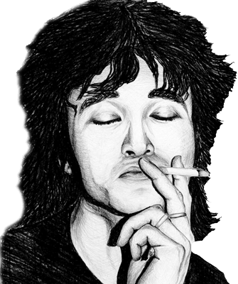

Minha maior inspiração é o artista Viktor Tsoi, onde eu vejo um artista que não se limitava ao regime do seu país para fazer o que mais amava. Ele sempre foi contra a ditadura e esse espírito rebelde trouxe uma chama que está em atividade até hoje...
Sobre
Aqui você vai poder me conhecer melhor.

Viktor Tsoi
// MAIS CONTEÚDO EM DESENVOLVIMENTO //